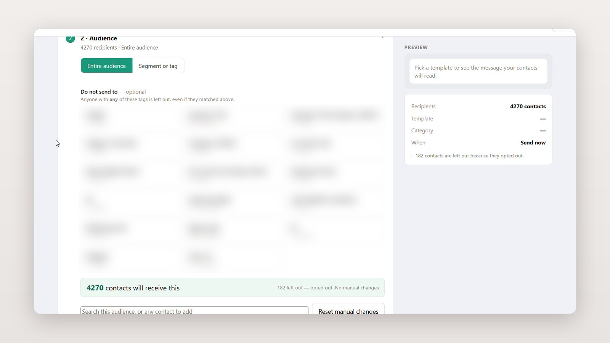
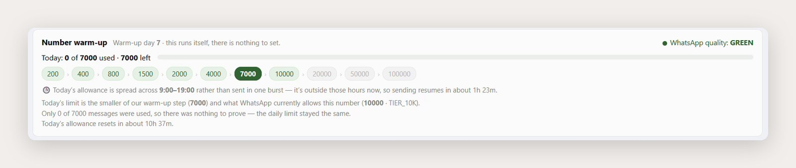

Product strategy
Scoped the first useful workflow within a larger platform.
I designed and built Cretile’s internal tool for safer campaigns and timely follow-ups.
Scoped the first useful workflow within a larger platform.
Made bulk sends safer and constraints visible.
Shipped the product with Claude reply automation.
Interakt worked. The friction sat around it: changing Excel exports, repeated audience setup and replies that depended on someone being online.
Losing access to our Meta account forced a new setup—and a chance to rethink the workflow.
How might we bring this work into one system without building the entire sales platform?
Founders and sales aligned on the larger direction. Version one only had to close one loop: I create campaigns; a salesperson replies.
Enquiry capture, ownership and qualification
Campaign launches made me nervous; the wrong audience or message would be public immediately. Confidence had to build before the final click.

What changedThe team is more relaxed because launching no longer feels instantly final.
One campaign offered four service options, each needing a different response. Manually, I had to watch every reply and answer one by one.
New numbers warm up gradually, Meta can flag quality, and normal replies close after 24 hours. These limits appear where decisions happen.

Shows whether a normal reply is still available.
The live release joins contacts, campaigns, delivery analytics and inbox safeguards. I run campaigns; one salesperson replies.

Next, the website, WhatsApp and sales ownership can share context automatically.
Owning a product matters when the team can shape it around how work actually happens. This release proves that with one complete workflow.